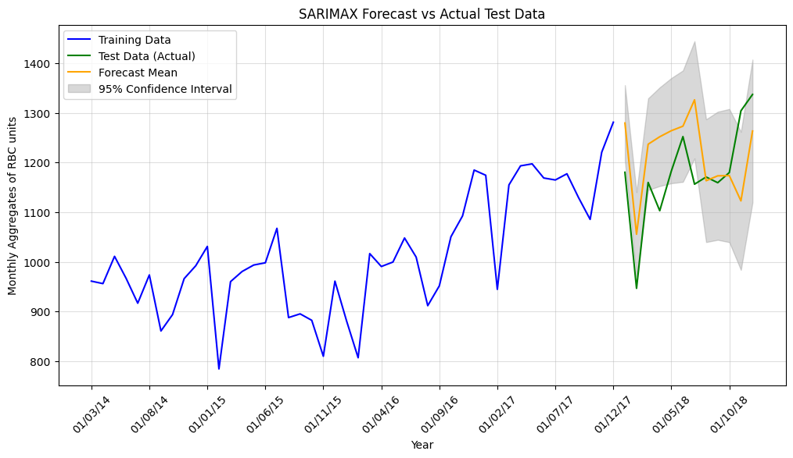
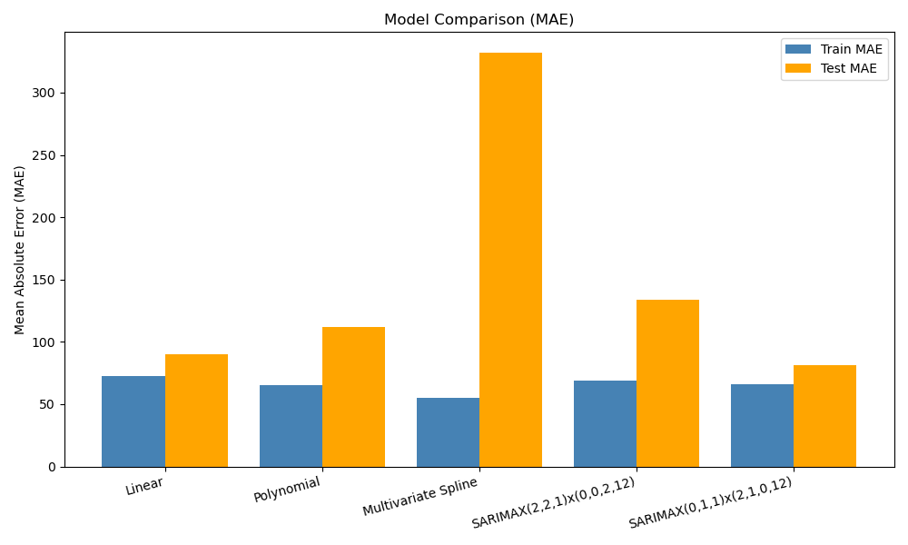

Project Overview
This project addresses the critical challenge of balancing red blood cell (RBC) supply and demand by employing time-series forecasting. Using SARIMA models, we aim to minimize wastage and avoid shortages in healthcare systems. Our forecasts include 95% confidence intervals to account for uncertainty, ensuring robust decision-making.
After testing multiple statistical and machine learning models, we selected the most efficient approach based on Mean Absolute Error (MAE) metrics in both training and testing phases.
Data Visualizations
Forecast with Confidence Intervals
Model Comparison (MAE)
Model Evaluation and Selection
Several models were tested to determine the most accurate predictor of RBC demand. The table below summarizes the MAE (Mean Absolute Error) values for each model during training and testing phases:
| Model | MAE (Train) | MAE (Test) |
|---|---|---|
| Linear | 72.72 | 89.99 |
| Polynomial | 65.47 | 111.95 |
| Multivariate Spline | 55.20 | 331.95 |
| SARIMAX(2, 2, 1) x (0, 0, 2, 12) | 69.19 | 133.45 |
| SARIMAX(0, 1, 1) x (2, 1, 0, 12) | 65.92 | 81.47 |
The SARIMAX(0, 1, 1) x (2, 1, 0, 12) model was selected as the best performer due to its lowest test MAE of 81.47. This model captures both short-term dependencies and seasonal patterns, making it ideal for RBC demand forecasting.